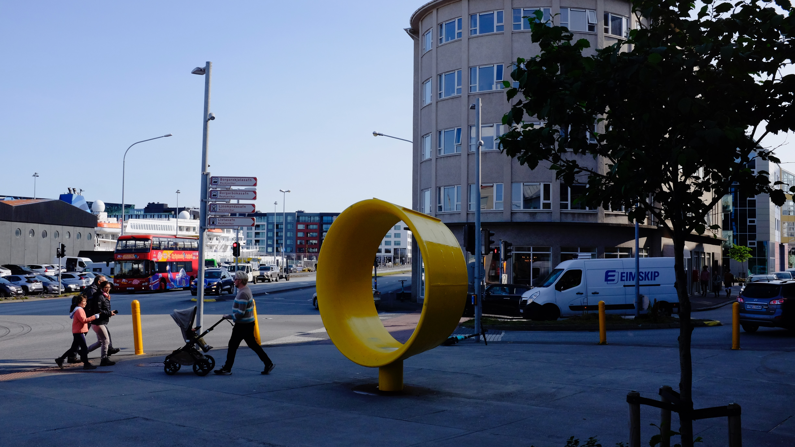
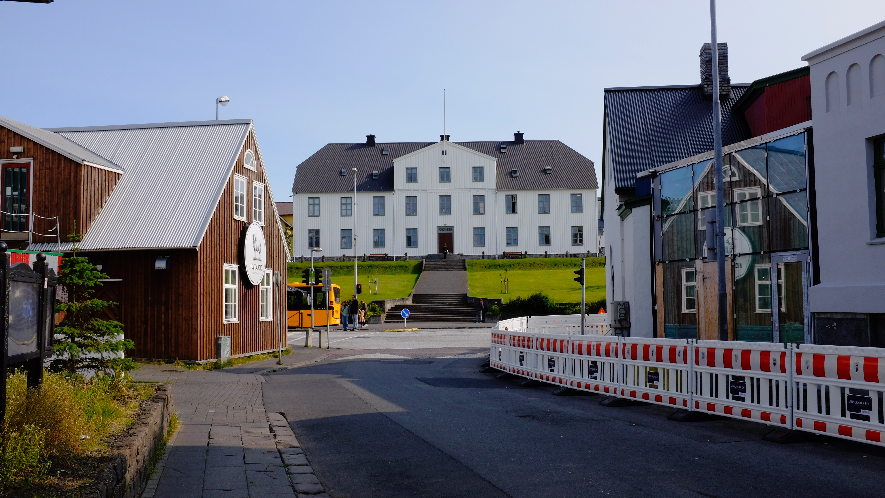
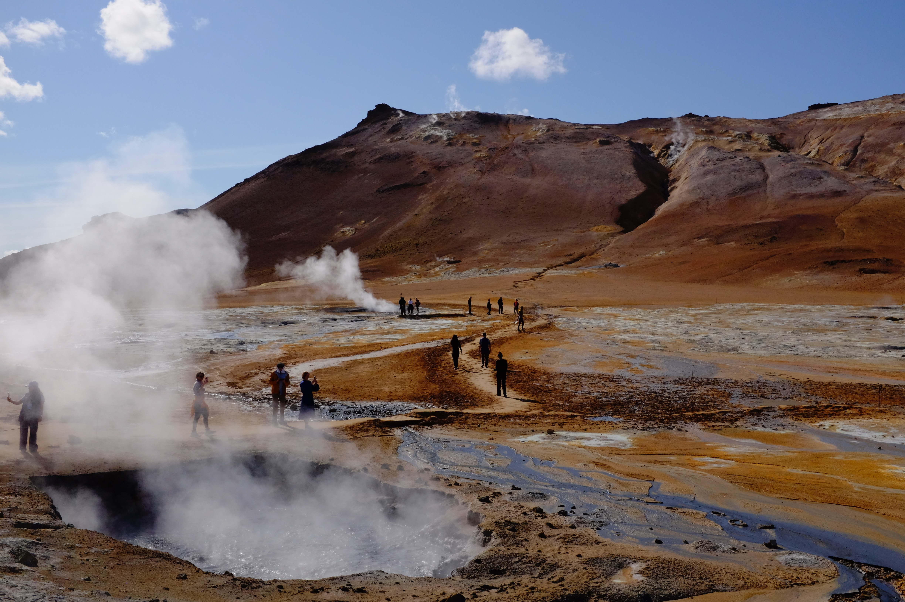
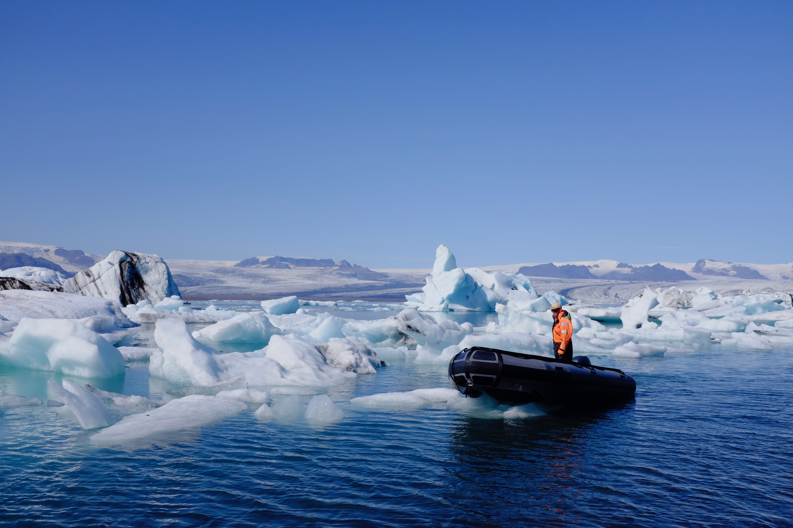

Iceland, an island northwest of the United Kingdom, formed 18 million years ago, when volcanic eruptions advected hot lava and uplifted rock, which eventually cooled enough for plants and animals to settle. Geologically, Iceland bridges the North American and Eurasian plates, which spread at 25 mm per year along the Mid-Atlantic Ridge. There is a small bridge that is supposed to connect the two plates, but technically it does not, because if it did, the bridge would have to be remade every few years. The entire country is roughly the same size as South Korea, and its population distribution is also similar to that of South Korea, as 64% of Icelanders live in Reykjavik, the country’s capital.
Reykjavik looks like a typical northern European city, calm and cold in the morning, with shiny sunlight eventually hitting the streets filled with coffee shops and pubs with outdoor tables that eventually get filled with tourists (mostly British). When I visited, Reykjavik reminded me of Hawaii, another volcanic island filled with tourists (mostly Americans), with the minor difference being the climate. The capital also features a unique church called Hallgrimskirkja, which stands tall in the busiest part of the town.


People go to Iceland to see its nature. To get to it, you can take a major highway called the Ring Road, which circles the entire island. This road will take you to stops that feature magnificent cliffs, ice-cold waterfalls, blue icebergs floating in rivers, smelly (hydrogen sulfide) geysers, and active volcanoes. The relatively small country packs in multiple national-park-level sights, and one week is sufficient to see the geology of Iceland, which, in fact, is most of the geology of the world. It’s like visiting miniature cities across the world.

